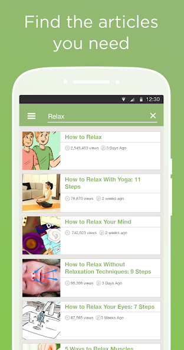
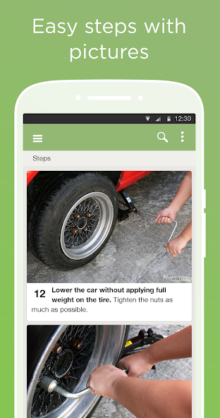

凌晨十一点，我靠一个小应用打出了人生第一条领带
面试前一夜对着领带慌了神，室友睡了爸妈远在千里，Google 搜出来的全是广告。偶然想起下载过的 wikiHow，跟着图文步骤一步步来，十分钟搞定。
衣柜门敞开着，衬衫、西裤、皮鞋摊了一床——领带攥在我手里，像攥着一团没揉开的面。
那是我毕业以来的第一场正经群面，邮件里明确写着"商务休闲偏正式"，我提前一周就把装备备齐了，唯独领带，买来之后从来没碰过。室友早就关灯睡了，爸妈在老家，视频通话信号不好。我掏出手机，Google 搜"领带怎么系"，前三条全是短视频平台的广告，第四条点进去是一个图文教程，加载了半分钟出来一张模糊的示意图。
这就是我装 wikiHow 的原因。不是特意去找的，是某个周末在 Google Play 闲逛时逛到它的wikiHow官网，顺手从官方下载装的，想着"万一用得上"——没想到用得上的时刻来得这么突然，这么紧迫。
应用打开没有花里胡哨的开屏广告，直接就是搜索框。我敲了四个字：领带 系法。

结果页给了我一串指南，每条下面都标着浏览量和更新时间——这是我后来才知道它的结果页设计逻辑：浏览量高说明被大量读者验证过，近期更新说明内容还在维护。我挑了一个"半温莎结"，浏览量 38 万，三天前刚更新过。
点进去，不是一个笼统的教程，是十几个方法的合集。每个方法都有独立的步骤，每一步配一张图。我选的半温莎结是七步，从领带怎么搭在脖子上开始，绕环、穿出、收束——每一步都用实拍照片标注了手的位置和领带的走向。没有废话，没有"首先你需要……"之类的前置条件，就是直接告诉你：现在领带宽的那一边在左边，长度大概到皮带扣的位置，然后……

我把手机架在书架上，对着镜子跟着做。第一步就绕反了，领带拧成了麻花——返回上一步，照片里的领带方向跟我手里的不一样，原来我把宽边搭在了右边。重新来，这次对了。第三步绕环的时候手指没捏住，领带滑掉了半截，又退回去。每卡住一次，我就回到那一步的照片，盯着图看两秒再动手。
七步，翻了七次，中间退了三次，十分钟打完了第一条领带。不是那种杂志封面上整齐划一的完美结，但版型正，没歪没散，从镜子里看不像个第一次打领带的人。
打完我坐回床上喘气，手指还留着领带绸面的触感。然后我才开始正眼看 wikiHow 这个应用——之前只是应急，现在闲下来逛了逛。
侧边菜单有 17 个中文分类，个人形象与时尚、人际关系、健康、家居与园艺、工作、旅行……几乎覆盖了一个普通人日常生活中可能遇到的"怎么办"。我后来去wikiHow文档里翻了翻才发现，它的分类体系和搜索技巧比我那天应急时摸到的要系统得多。我点进"工作"分类，里面有面试技巧、简历修改、辞职怎么开口；点进"家居与园艺"，有消除蟑螂的四种方法、怎么保养木地板；甚至有"宗教与哲学"的分类，放着一些关于冥想、情绪管理的指南。
搜索框旁边还有一个随机指南的按钮，点一下就给你开盲盒——那天我凌晨十二点半，点出来一篇"怎么快速煮出不糊底的燕麦粥"，收藏了。
说两个让我觉得踏实的细节。第一个是权限——wikiHow 装完打开没有一长串权限弹窗，我在系统设置里看它的数据声明，不跟第三方分享数据，注册账号完全可选，不注册也能完整使用。第二个是收藏功能，那天打的领带指南和那篇燕麦粥指南，我都点了收藏，它还能离线保存，以后地铁上没网也能翻。
第二天面试前我又打开那个半温莎结的指南，对着步骤两分钟就系好了。面试本身没什么特别的，但走出公司大门的时候，我摸了摸衣领处那个结——它不再是一条陌生的绸带，而是我凌晨十一点对着手机一步步拧出来的。
后来我偶尔会想起那个晚上。不是因为面试，是因为 wikiHow 给我的感觉——它不是一个百科全书式的知识库，而是一套"怎么做"的说明书。当你面对一件没做过的事、没有熟人可问、搜索引擎全是广告的时候，它能给你一条清晰的路。步骤不是你自己从长文里扒出来的，是别人已经帮你整理好的、被几十万人试过的、还在更新的。
我现在手机里还留着它。领带那个结我已经会打了，指南收藏着没删——说不定哪天又有别的事，会在凌晨十一点想起它。整理过的指南目录和配套资料，在GitHub、Gitee、GitCode三个仓库都能找到，国内外访问随你挑。